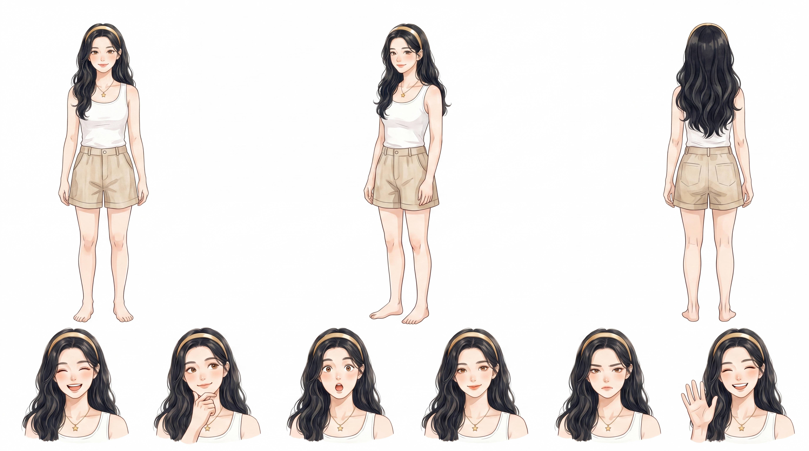

AI 生圖
文生圖 vs 墊圖：兩種完全不同的事
以 Alice（AI Agent 桌面應用）為例：同樣係「生成一張 Alice 喺書房嘅圖」，有冇參考圖，產出嘅質素天差地別。呢個係產品經理設計生圖功能時一定要搞清嘅第一個決策。
兩種模式，用 Alice 來看
文生圖 (Text-to-Image)
輸入：只有文字
「愛麗絲在書房看書，温暖燈光，書架背景，藍裙白圍裙」
模型憑想像力生成

模型按文字描述生成，但每次角色長什麼樣，全靠運氣
墊圖 (Image-to-Image)
輸入：參考圖 + 文字

參考圖 + 「Alice 在書房辦公，筆記本電腦，暖色調」
以參考圖為錨點生成

模型根據參考圖約束外貌，Alice 每次都長一樣
核心區別：文生圖是從無到有，模型每次對 Alice 的想像都不同；墊圖是以圖為錨，參考圖鎖定了 Alice 的外貌，模型只在這個約束下變換場景和動作。
邊種場景用邊種？
| 場景 | 推薦模式 | 原因 |
|---|---|---|
| 純背景/環境圖 | 文生圖 | 不涉及角色，純場景描述即可 |
| 食物、物品特寫 | 文生圖 | 無需人物一致性約束 |
| 角色出鏡（Alice 做某事） | 墊圖 | 必須保證還是 Alice，需要參考圖錨定 |
| 角色換裝 | 墊圖 | 臉不變衣服變，必須有臉部參考 |
| 多場景系列圖 | 墊圖 | 一組圖裏角色外貌需一致 |
| 創意發散/概念探索 | 文生圖 | 不需要鎖定形象，越多變越好 |
文生圖 = 無中生有，適合不需要一致性的場景；墊圖 = 以圖為錨，適合角色必須穩定的場景。在 Alice 這樣有固定形象的產品裏，絕大多數出圖都走墊圖，因為用戶不能接受「每次 Alice 都長得唔一樣」。